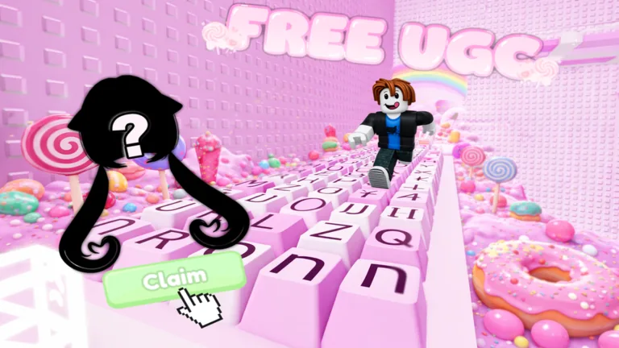
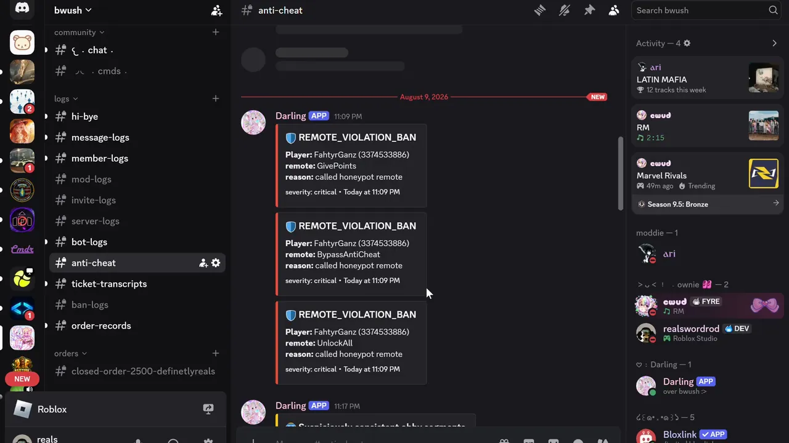
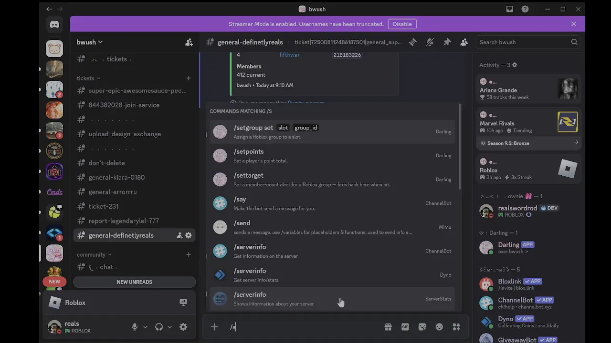
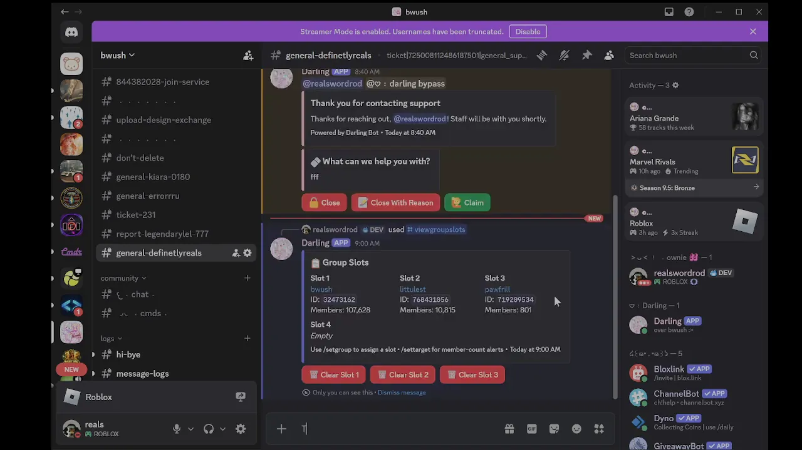
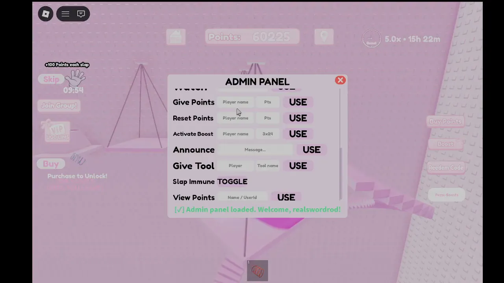

Live game · bwush · since March 2026
AFK for FREE UGC
An AFK game: players earn a point every second and spend points on free UGC items, with boosts, an obby and a slap tool to speed things up. The rewards are real avatar items, so the economy is the thing people try to break, and most of the systems below exist to protect it.


- Role
- Lead programmer
- Group
- bwush, ~124k members
- Visits
- 1,085,182
- Favourites
- 12,988
- Server size
- 25 players
Figures from the Roblox API on 15 Oct 2026.
Play it on Roblox1.1Player data
Saves go through ProfileStore with session locking. A player who rejoins quickly or hops servers can't have the same save loaded twice, which is the usual way items get duplicated. Studio sessions write to a separate store, so testing never touches live data.
Boosts are saved as an expiry time instead of a countdown. A boost bought before logging off is still correct when the player comes back, and a boost given to someone who's offline is written straight into their save.
Roblox disconnects idle players after 20 minutes, which is a problem in a game built around being idle. At 19 minutes the server teleports the player back into the game instead, so the session carries on.
- Saves
- ProfileStore, session-locked
- Stores
- Live and Test kept apart
- Boosts
- Stored as expiry timestamps
- Idle
- Rejoin at 19 min
1.2Anti-cheat

Play 0:17Anything that pays out is decided on the server. Exploiters can fire any remote with any arguments, so the client is never asked whether it deserves points.
- Movement
- Flying and teleport checks don't ban on one bad reading. Each suspicious frame adds to a score that drains over time, so a lag spike or a fling drains away by itself. Only sustained flying climbs through the stages: a warning, then being put back on the ground, then a ban. A first ban lasts a week; a second one is permanent.
- Bait remotes
- Some remotes exist only as bait. They have the kind of names an exploiter goes looking for, no real client ever fires them, and firing one is an instant ban.
- Payouts
- Purchase prompts are checked against the game's own product IDs, and point gains are compared against the amounts the game can actually award. A burst of gains that don't match raises an alert.
- Obby runs
- Runs are timed segment by segment. People are inconsistent; macros aren't. A run where every segment takes almost exactly the same time is flagged with its timing spread attached, so staff review it rather than the script guessing.
- Alts
- Accounts under 90 days old can't join, which shuts out most alt farms.
1.3Discord commands that reach live servers
Staff manage the game from Discord. A slash command goes to the bot, the bot publishes it through Roblox Open Cloud, and every live server is subscribed to that topic, so the command reaches whichever server the player is in. If they aren't in one, their save is opened by key and edited directly. The result comes back to Discord as an embed.
- DiscordStaff run /setpoints
- BotNode.js, publishes the command
- Open CloudMessaging API, one topic
- Live serversEach checks for the player
- SaveEdited directly if they're offline
- DiscordResult posted back by webhook

Play 2:061.4Group slots

Play 3:46The game's "Join Group for Perks" prompt is filled from four group slots. Staff assign a group to a slot with /setgroup and clear one with a button. /settarget posts in the channel when a group reaches a member count.
1.5Admin panel

Play 0:52Points, boosts, announcements, tools, kicks, bans and teleports, plus a lookup for any player's points by name or UserId. The panel is only UI: each command is checked against the admin list on the server before it runs.